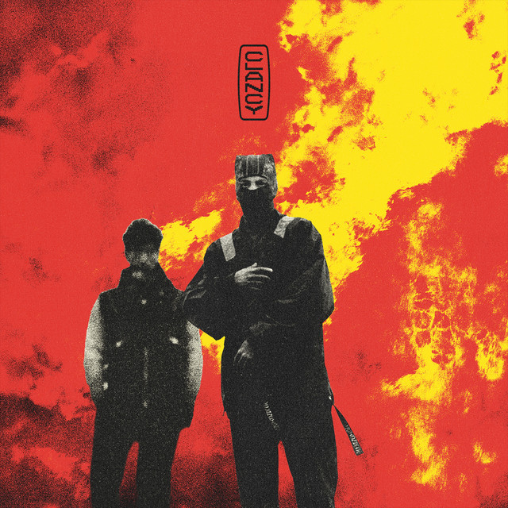
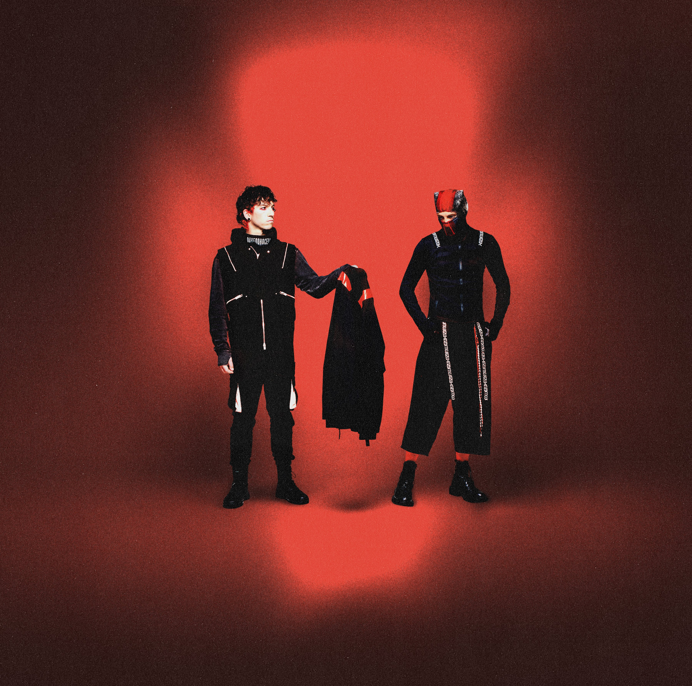

Tyler Joseph
Tyler Robert Joseph, conocido simplemente como Tyler Joseph, es un músico, cantante, rapero, compositor y productor estadounidense, conocido por ser el vocalista del dúo estadounidense Twenty One Pilots.
Twenty One Pilots es un dúo musical estadounidense de Columbus, Ohio. La banda se formó en 2009 por el vocalista Tyler Joseph junto con Nick Thomas y Chris Salih, quienes la abandonaron en 2011. Desde su partida, la formación ha consistido en el cantante Tyler Joseph y el baterista Josh Dun.
El grupo es principalmente conocido por los sencillos "Stressed Out", "Ride" y "Heathens". El grupo recibió un Premio Grammy al mejor pop de dúo/grupo en los Premios Grammy de 2017.
Tyler Robert Joseph, conocido simplemente como Tyler Joseph, es un músico, cantante, rapero, compositor y productor estadounidense, conocido por ser el vocalista del dúo estadounidense Twenty One Pilots.
Joshua William Dun, más conocido como Josh Dun, es un músico estadounidense, conocido por ser el baterista del dúo musical Twenty One Pilots.
Twenty One Pilots es el álbum debut homónimo de la banda estadounidense Twenty One Pilots, lanzado de forma independiente el 29 de diciembre de 2009. El álbum vendió 115,000 copias y alcanzó el número 139 en los EE. UU. Billboard 200.

Regional at Best, es el álbum no oficial lanzado de forma independiente por el grupo musical estadounidense Twenty One Pilots, publicado el 8 de julio de 2011. El álbum no oficial cambió de estilo musical respecto al primero, este teniendo elementos del indietronica, indie rock, electrónica y hip hop.

Vessel es el segundo álbum del grupo estadounidense Twenty One Pilots, lanzado el 8 de enero del 2013. Es el primer álbum de estudio de la banda grabado con Fueled By Ramen, después de lanzar dos álbumes independientes, Twenty One Pilots, y Regional At Best.

Blurryface, es el cuarto álbum de larga duración y segundo álbum de estudio del dúo musical estadounidense Twenty One Pilots, lanzado el 17 de mayo de 2015, a través de Fueled by Ramen. Al igual que su álbum anterior Vessel, el álbum toma influencia de varios géneros, incluidos hip hop, rock, pop, reggae e indie.

Trench es el quinto álbum del dúo estadounidense Twenty One Pilots y el tercero como dúo. El álbum fue lanzado el 5 de octubre del 2018. Al igual que sus dos anteriores álbumes, Vessel y Blurryface, el álbum tiene influencias de distintos géneros musicales, como el rap rock, el R&B, disco, pop rock y reggae.

Scaled And Icy es el sexto álbum de larga duración y cuarto álbum de estudio del dúo estadounidense Twenty One Pilots publicado el 21 de mayo de 2021 a través de Fueled by Ramen y Elektra. El título del álbum es un anagrama de «Clancy is Dead», una referencia a un personaje de su anterior álbum, Trench.

Clancy es el séptimo álbum de larga duración y quinto álbum de estudio del dúo estadounidense Twenty One Pilots, publicado el 24 de mayo de 2024 a través de Fueled by Ramen.
Breach es el próximo octavo álbum de estudio del dúo musical estadounidense Twenty One Pilots , programado para ser lanzado en septiembre de 2025 a través de Fueled by Ramen . Es una continuación del séptimo álbum del dúo Clancy, y está destinado a concluir una serie conceptual que comenzó con Blurryface y también incluyó Trench y Scaled and Icy.
A lo largo de su trayectoria, Twenty One Pilots ha demostrado ser mucho más que un simple dúo musical. Con una evolución constante en su sonido y letras profundamente personales, Tyler Joseph y Josh Dun han logrado construir una conexión única con su audiencia, abordando temas de salud mental, fe y las complejidades de la vida moderna. Desde sus inicios independientes hasta consolidarse como una de las bandas más influyentes de su generación, el impacto de Twenty One Pilots trasciende la música, creando una comunidad global que valora su autenticidad y mensaje. Sus proyectos futuros, como "Breach", prometen seguir expandiendo su narrativa y dejando una huella imborrable en el panorama musical.